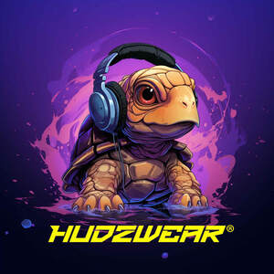

Trade Mark Journal No.2025/039 26 September 2025
UK00004263636 12 September 2025 (16,25)

- Class 16
- Printed leaflets; Printed photographs; Printed invitations; Printed cards; Printed books; Printed calendars; Printed paper labels; Printed menus; Printed visuals; Printed art reproductions; Annuals [printed publications]; Printed stories in illustrated form; Printed music books; Graphic prints; Printed transfers for embroidery or fabric appliqués; Cartoon prints; Colouring books; Coloring books for adults; Colouring pencils; Pencils for colouring; Colouring pens; Comic books; Colouring pictures; Non-fiction books; Picture books; Fiction books; Series of non-fiction books; Activity books; Poster books; Sticker books; Series of fiction books; Signature books; Story books; Sticker activity books; Music note books; Song books; Pop-up books; Pictures; Photo prints; Art pictures; Prints in the nature of pictures; Postcards and picture postcards; Signed photographs; Paintings [pictures], framed or unframed; Picture cards; Photo albums and collectors' albums; Portraits; Mounted and unmounted photographs; Photographic reproductions; Collector's photographs of players; Pictorial prints; Art prints; Posters; Mounted posters; Poster magazines; Graphic art prints; Prints; Printed paper signs featuring names for use for special events; Albums for stickers; Stickers; Graphic art reproductions; Graphic reproductions; Wall calendars; Lenticular postcards; Print characters.
- Class 25
- Printed t-shirts; Short-sleeved T-shirts; Tee-shirts; Dress shirts; Camouflage shirts; Sportswear; Ready-to-wear clothing; Sports footwear; Clothing for sports; Shoes for leisurewear; Athletic clothing; Footwear for sport; Men's clothing; Footwear; Gymwear; Gloves for apparel; Casual footwear; Leisure clothing; Clothing; Jerseys [clothing]; Shorts [clothing]; Casual clothing; Sports shirts; Clothes for sport; Clothing for leisure wear; Trainers [footwear]; Playsuits [clothing]; Beachwear; Articles of sports clothing; Embroidered clothing; Dance clothing; Jogging sets [clothing]; Loungewear; Clothing of leather; Soccer shirts; Articles of clothing made of leather; Inner socks for footwear; Basketball shoes; Hoodies; Sweatshirts; Hooded sweatshirts; Tracksuits; V-neck sweaters; Beanie hats; Sweatpants; Men's and women's jackets, coats, trousers, vests; Cardigans; Turtlenecks; Jackets (Stuff -) [clothing]; Maternity shirts; Hooded tops; Jumpers [pullovers]; Overshirts; Polo shirts; Headbands [clothing]; Hooded bathrobes; Sleep shirts; Night shirts; Polo sweaters; Football shirts; Tops [clothing]; Scarfs; Hats; Bomber jackets; Under shirts; Ready-made clothing; Aprons [clothing]; Articles of clothing; Sports caps and hats; Bobble hats; Baseball caps and hats.
HUDZWEAR LTD